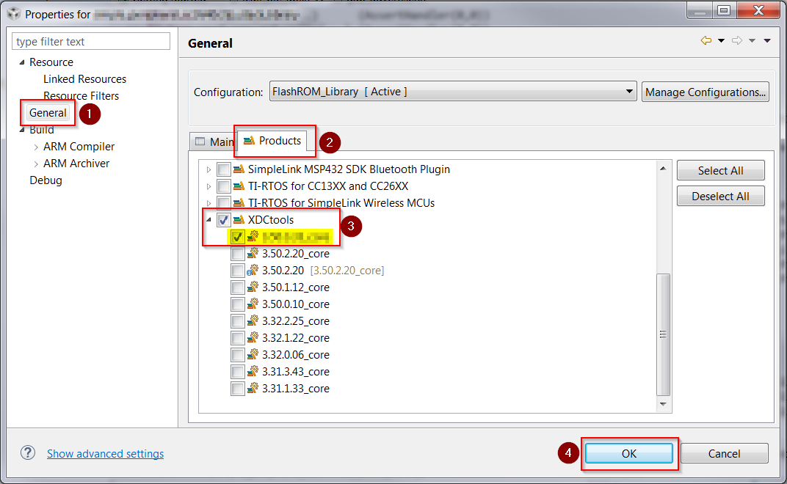
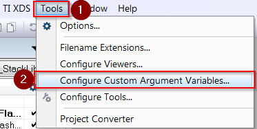

BLE5-Stack 1.00.01 to BLE5-Stack 1.01.00¶
This section will describe a way to migrate a project from BLE5-Stack 1.00.01 to a BLE5-Stack 1.01.00. This approach will be modifying an existing project’s configuration to utilize BLE5-Stack 1.01.00 libraries, tools, and code.
Once the project is converted to use the updated libraries, tools, and code of BLE5-Stack 1.01.00, the application then must be engineered to account for various API changes. This guide will contain API translation tables as well as tips to aide in the transition to BLE5-Stack 1.01.00.
For this migration guide, simple_peripheral from BLE5-Stack 1.00.01 will be ported to BLE5-Stack 1.01.00. Utilize the IDE and Tools recommended by BLE5-Stack release notes.
Once project configurations are updated, follow same building procedure used prior to the port. It is assumed the latest SDK has already been installed, see SimpleLink SDKs.
When applicable, this section will use simple_peripheral from BLE5-Stack 1.00.01 as an example when porting to BLE5-Stack 1.01.00.
For API Descriptions see BLE Stack API Reference
Table of Contents:
Project Configuration Changes¶
Project configuration needs to be updated in order to utilize the latest tools, code, and libraries. This section describes the changes necessary in order to do so in a IDE specific way.
CCS Stack Project¶
Updating XDC Tools to Version 3.50.3.33
Open Project Properties of the stack project for the application being ported
- Select General from the Navigation Tree
- Select Products Tab
- Select XDCtools version 3.50.3.33_core (Latest)
- Save Changes
Figure 141. CCS Updating XDC Tools Visual Instructions
This will update the
XDC_CG_ROOTpath variable to utilize the latest version of XDCtools.Select BLE5-Stack 1.01.00
Open Project Properties of the stack project for the application being ported
- Select General from the Navigation Tree
- Select Products Tab
- Select SimpleLink CC2640R2 SDK version containing BLE5-Stack 1.01.00
- Save Changes
Figure 142. CCS Updating BLE5-Stack Visual Instructions
This will update the
COM_TI_SIMPLELINK_CC2640R2_SDK_INSTALL_DIRpath variable to utilize the SDK containing BLE5-Stack 1.01.00.The path variables
SRC_BLE_DIRandTOOLS_BLE_DIRwill automatically be updated to point to the BLE5-Stack 1.01.00 version of tools and code.Update lib_search tool to correctly pull in the proper libraries
Open Project Properties of the stack project for the application being ported
Select Build from the Navigation Tree
Select Steps Tab
Modify the prebuild step from
${TOOLS_BLE_DIR}/lib_search/lib_search ${PROJECT_LOC}/TOOLS/build_config.opt ${SRC_BLE_DIR}/blelib ${PROJECT_LOC}/FlashROM_Library/lib_linker.cmd cc2640 ${TOOLS_BLE_DIR}/lib_search/lib_search.xml ${SRC_BLE_DIR}/symbolsto the following:
${TOOLS_BLE_DIR}/lib_search/lib_search --opt ${PROJECT_LOC}/TOOLS/build_config.opt --lib-dir ${SRC_BLE_DIR}/blelib/cc26x0r2 --cmd ${PROJECT_LOC}/FlashROM_Library/lib_linker.cmd --xml ${TOOLS_BLE_DIR}/lib_search/lib_search.xml --sym-dir ${SRC_BLE_DIR}/symbols/cc26x0r2Save Changes
Figure 143. CCS Updating Pre-Build Visual Instructions
This change accounts for updates to the lib_search tool’s argument variables.
Update include path for Controller files
Open Project Properties of the stack project for the application being ported
- Select Build -> ARM Compiler -> Include Options in the Navigation Tree
- Select
${SRC_BLE_DIR}/controller/cc26xx_r2/incinclude path - Modify the path by double clicking or pressing ‘Edit’
- Change to
${SRC_BLE_DIR}/controller/cc26xx/inc(remove _r2) - Save Changes
See CCS Updating Include Path Visual Instructions
Note
The include path
${SRC_BLE_DIR}/profiles/rolescan safely be removed.The path to controller files have changed. In order include these files, a include path needs to be updated.
Update source references for Controller and GAP
Due to path changes for several key files, the virtual links within the project need to be updated to properly find files.
The files which have been moved are located in:
C:\ti\simplelink_cc2640r2_sdk_1_50_00_06\source\ti\ble5stack\controller\cc26xx\inc C:\ti\simplelink_cc2640r2_sdk_1_50_00_06\source\ti\ble5stack\host
Namely, controller files and GAP related files.
Examples are
ll.hlocated in theINCLUDEfolder, andgap.c,gapbondmgr.c, andgapbondmgr.hlocated in thePROFILESfolder.Open the properties of a resource file of the stack project.
- Select Resource in the Navigation Tree
- Click Edit next to the Location field
- Modify location to match the resource’s actual location
- Confirm Changes
- Save Changes
Figure 144. CCS Updating Pre-Build Visual Instructions
This change allows the compiler to correctly resolve locations of moved files.
CCS Application Project¶
Updating XDC Tools to Version 3.50.3.33 and BLE5-Stack to 1.01.00
Open Project Properties of the application project for the application being ported
- Select General from the Navigation Tree
- Select Products Tab
- Select XDCtools version 3.50.3.33_core (Latest)
- Select SimpleLink CC2640R2 SDK version containing BLE5-Stack 1.01.00
- Save Changes

This will update the
XDC_CG_ROOTpath variable to utilize the latest version of XDCtools.This will update the
COM_TI_SIMPLELINK_CC2640R2_SDK_INSTALL_DIRpath variable to utilize the SDK containing BLE5-Stack 1.01.00.Update include path for Controller files
Open Project Properties of the stack project for the application being ported
- Select Build -> ARM Compiler -> Include Options in the Navigation Tree
- Select
${SRC_BLE_DIR}/controller/cc26xx_r2/incinclude path - Modify the path by double clicking or pressing ‘Edit’
- Change to
${SRC_BLE_DIR}/controller/cc26xx/inc(remove _r2) - Save Changes
Figure 146. CCS Updating Include Path Visual Instructions
Note
The include path
${SRC_BLE_DIR}/profiles/rolescan safely be removed.The path to controller files have changed, this change updates the include path.
Add
USE_CORE_SDKto Predefined SymbolsOpen Project Properties of the stack project for the application being ported
- Select Build -> ARM Compiler -> Predefined Symbols
- Click Add to enter another Symbol
- Add
USE_CORE_SDKpredefined symbol - Confirm
- Save Changes
Figure 147. CCS Adding Preprocessor Symbols Visual Instructions
This will allow correct resolution of middle ware drivers by the compiler.
IAR Common Project Configuration Changes¶
Since both the application and stack project utilize a common custom argument variable file, only this file needs to be configured to point to the correct stack and tools.
Modifying Custom Argument Variables for BLE5-Stack 1.01.00 and XDCtools 3.50.3.33_core
Click Tools from the Toolbar
Select Configure Custom Argument Variable item
Expand the
SIMPLELINK_CC2640R2_SRC_SDKHeadingModify
SIMPLELINK_CORE_SDK_INSTALL_DIRto path of SDK containing BLE5-Stack 1.01.00Modify
XDCROOTto path of XDCtools 3.50.3.33_coreSave Changes
Figure 149. IAR Changing Argument Variables
Re-launch IAR Embedded Workbench
This will refresh all file references to use BLE5-Stack 1.01.00 and XDCtools 3.50.3.33_core.
IAR Stack Project¶
Modifying Include Path and Preprocessor Defines
Open Project Properties of the stack project for the application being ported
Select C/C++ Compiler from the navigation tree
Select Preprocessor Tab
Modify include paths to point to correct directory
Change
$SRC_BLE_DIR$\controller\cc26xx_r2\incto$SRC_BLE_DIR$\controller\cc26xx\incAdd
USE_CORE_SDKto Defined SymbolsSave changes
Figure 150. IAR Changing Include Paths
Note
The include path
$SRC_BLE_DIR$\profiles\rolescan be safely removedRemove old referenced files
Remove
Profiles/gap.c,Profiles/gapbondmgr.h,Profiles/gapbondmgr.cThese files have been moved, and these old project links will be using the old location.
Add new files from proper locations
Add
gap.candgapbondmgr.cfrom<SDK>\source\ti\ble5stack\hostto the Profiles folder.Add
gapbondmgr.hfrom<SDK>\source\ti\ble5stack\incto the Profiles Folder.
IAR Application Project¶
Modifying Include Path and Preprocessor Defines
Open Project Properties of the stack project for the application being ported
Select C/C++ Compiler from the navigation tree
Select Preprocessor Tab
Modify include paths to point to correct directory
Change
$SRC_BLE_DIR$\controller\cc26xx_r2\incto$SRC_BLE_DIR$\controller\cc26xx\incAdd
USE_CORE_SDKto Defined SymbolsSave changes
See IAR Changing Include Paths
Note
The include path
$SRC_BLE_DIR$\profiles\rolescan be safely removedRemove old referenced files
Remove
Profiles/gap.c,Profiles/gapbondmgr.h,Profiles/gapbondmgr.cThese files have been moved, and these old project links will be using the old location.
Add new files from proper locations
Add
gap.candgapbondmgr.cfrom<SDK>\source\ti\ble5stack\hostto the Profiles folder.Add
gapbondmgr.hfrom<SDK>\source\ti\ble5stack\incto the Profiles Folder.
Project Application Changes¶
There are a number of different changes to the API in order to improve usability and ensure support with future BLE 5 features.
Among these changes are core fundamental changes of how GAP Roles are done in BLE5-Stack. Namely, the removal of source files particular to GAP Roles, rather focusing on device behavior.
Functionality has also been relocated to other modules where necessary to further facilitate this change. Additionally, Bluetooth 5.0 features are now always enabled with no option to disable.
For more information regarding the GAP changes and how to utilize them, see Generic Access Profile (GAP)
Stack Build Configuration File¶
The build_config.opt specifies which stack components will
be utilized, and thus which library files should be used during
the Stack Project build process. This file is located in the Tools
folder of the Stack Project.
BLE5-Stack 1.01.00 now comes with BLE 5.0 features always enabled. BLE 5.0 features can not be removed from the stack.
Remove any references to BLE 5.0 features in the build_config.opt
For example, if -DV50_FEATURES=PHY_LR_CFG is in the build_config.opt
comment out or remove the line altogether.
GAP Role Changes¶
All GAP Roles source files have been removed. These files such as
peripheral.c, central.c, will produce build errors and
must be removed.
In general functionality of the roles has been broken into distinct GAP functions: Scanner, Advertiser, and Initiator.
These functions of GAP can be independently controlled to allow the device to function as a desired GAP Role such as peripheral or central.
Utilize GAP Changes to port application functionality.
Examples may need to be used to assist in re-architecture of the application, such as simple_peripheral or simple_central. For example, initialization of GAP Advertiser can be found in simple_central.
GATT Profile Changes¶
Due to changes in LinkDB defines (linkdb.h), custom GATT profiles
may need to modified in order to account for the new definitions.
For example, when calling GATTServApp_InitCharCfg with an invalid handle use the following:
// Initialize Client Characteristic Configuration attributes GATTServApp_InitCharCfg( CONNHANDLE_INVALID, simpleProfileChar4Config );
The previous define for invalid handle as defined in linkdb.h
was INVALID_CONNHANDLE.
See GAP GATT Server Changes and Link Database Changes for additional changes as required.
GAP Bond Manager Changes¶
During the removal of GAP Roles source files, functionality relating to specific roles was moved into GAP Bond Manager. One particular change is the handling of passcodes. These are now handled via call back - see simple_peripheral or simple_central for implementation details (search for passcodeCb).
See GAP Bond Manager Changes for additional changes.
Appendix - Translation Tables¶
| Previous Implementation | New/Current implementation | |
|---|---|---|
| Type | Name | Description / API / Parameter |
| GAP EVENT | GAP_AdvertDataUpdateDone |
|
| GAP EVENT | GAP_DeviceDiscovery |
|
| GAP EVENT | GAP_AdvertDataUpdateDone | Check Return Status on GapAdv_loadData |
| GAP EVENT | GAP_MakeDiscoverableDone | Check Return Status on GapAdv_enable |
| GAP EVENT | GAP_EndDiscoverableDone | Check Return Status on GapAdv_disable |
| GAP EVENT | GAP_RandomAddrChanged | Obsolete - Address Resolution is done controller |
| GAP EVENT | GAP_LinkParamUpdate | Event is same - now supports both LLCP and L2CAP |
| GAP PARAM | TGAP_GEN_DISC_ADV_MIN | Configured by durationOrMaxEvents parameter of GapAdv_enable |
| GAP PARAM | TGAP_LIM_ADV_TIMEOUT | Configured by durationOrMaxEvents parameter of GapAdv_enable |
| GAP PARAM | TGAP_GEN_DISC_SCAN | Configured by parameters of GapScan_enable |
| GAP PARAM | TGAP_LIM_DISC_SCAN | Configured by parameters of GapScan_enable |
| GAP PARAM | TGAP_GEN_DISC_SCAN_INT | Configured by interval parameter of GapScan_setPhyParams |
| GAP PARAM | TGAP_GEN_DISC_SCAN_WIND | Configured by window parameter of GapScan_setPhyParams |
| GAP PARAM | TGAP_LIM_DISC_SCAN_INT | Configured by interval parameter of GapScan_setPhyParams |
| GAP PARAM | TGAP_LIM_DISC_SCAN_WIND | Configured by window parameter of GapScan_setPhyParams |
| GAP PARAM | TGAP_CONN_EST_ADV_TIMEOUT | Configured by durationOrMaxEvents parameter of GapAdv_enable |
| GAP PARAM | TGAP_CONN_PARAM_TIMEOUT | GAP_SetParamValue with GAP_PARAM_CONN_PARAM_TIMEOUT |
| GAP PARAM | TGAP_LIM_DISC_ADV_INT_MIN | GAP_SetParamValue with GAP_ADV_PARAM_PRIMARY_INTERVAL_MIN |
| GAP PARAM | TGAP_LIM_DISC_ADV_INT_MAX | GAP_SetParamValue with GAP_ADV_PARAM_PRIMARY_INTERVAL_MAX |
| GAP PARAM | TGAP_GEN_DISC_ADV_INT_MIN | GAP_SetParamValue with GAP_ADV_PARAM_PRIMARY_INTERVAL_MIN |
| GAP PARAM | TGAP_GEN_DISC_ADV_INT_MAX | GAP_SetParamValue with GAP_ADV_PARAM_PRIMARY_INTERVAL_MAX |
| GAP PARAM | TGAP_CONN_ADV_INT_MIN | GAP_SetParamValue with GAP_ADV_PARAM_PRIMARY_INTERVAL_MIN |
| GAP PARAM | TGAP_CONN_ADV_INT_MAX | GAP_SetParamValue with GAP_ADV_PARAM_PRIMARY_INTERVAL_MAX |
| GAP PARAM | TGAP_CONN_SCAN_INT | Configured by interval parameter of GapScan_setPhyParams |
| GAP PARAM | TGAP_CONN_SCAN_WIND | Configured by window parameter of GapScan_setPhyParams |
| GAP PARAM | TGAP_CONN_HIGH_SCAN_INT | Configured by interval parameter of GapScan_setPhyParams |
| GAP PARAM | TGAP_CONN_HIGH_SCAN_WIND | Configured by window parameter of GapScan_setPhyParams |
| GAP PARAM | TGAP_GEN_DISC_SCAN_INT | Configured by interval parameter of GapScan_setPhyParams |
| GAP PARAM | TGAP_GEN_DISC_SCAN_WIND | Configured by window parameter of GapScan_setPhyParams |
| GAP PARAM | TGAP_LIM_DISC_SCAN_INT | Configured by interval parameter of GapScan_setPhyParams |
| GAP PARAM | TGAP_LIM_DISC_SCAN_WIND | Configured by window parameter of GapScan_setPhyParams |
| GAP PARAM | TGAP_CONN_EST_INT_MIN | GapInit_setPhyParam with INIT_PHYPARAM_CONN_INT_MIN |
| GAP PARAM | TGAP_CONN_EST_INT_MAX | GapInit_setPhyParam with INIT_PHYPARAM_CONN_INT_MAX |
| GAP PARAM | TGAP_CONN_EST_SCAN_INT | GapInit_setPhyParam with INIT_PHYPARAM_SCAN_INTERVAL |
| GAP PARAM | TGAP_CONN_EST_SCAN_WIND | GapInit_setPhyParam with INIT_PHYPARAM_SCAN_WINDOW |
| GAP PARAM | TGAP_CONN_EST_SUPERV_TIMEOUT | GapInit_setPhyParam with INIT_PHYPARAM_SUP_TIMEOUT |
| GAP PARAM | TGAP_CONN_EST_LATENCY | GapInit_setPhyParam with INIT_PHYPARAM_CONN_LATENCY |
| GAP PARAM | TGAP_CONN_EST_MIN_CE_LEN | Obsolete - Not Used by Controller |
| GAP PARAM | TGAP_CONN_EST_MAX_CE_LEN | Obsolete - Not Used by Controller |
| GAP PARAM | TGAP_PRIVATE_ADDR_INT | GAP_SetParamValue with GAP_PARAM_PRIVATE_ADDR_INT |
| GAP PARAM | TGAP_CONN_PAUSE_CENTRAL | Obsolete - Not Used by Controller |
| GAP PARAM | TGAP_CONN_PAUSE_PERIPHERAL | Calling GAP_UpdateLinkParamReq as desired |
| GAP PARAM | TGAP_SM_TIMEOUT | GAP_SetParamValue with GAP_PARAM_SM_TIMEOUT |
| GAP PARAM | TGAP_SM_MIN_KEY_LEN | GAP_SetParamValue with GAP_PARAM_SM_MIN_KEY_LEN |
| GAP PARAM | TGAP_SM_MAX_KEY_LEN | GAP_SetParamValue with GAP_PARAM_SM_MAX_KEY_LEN |
| GAP PARAM | TGAP_FILTER_ADV_REPORTS | Obsolete - Duplicate Filtering done in Controller |
| GAP PARAM | TGAP_SCAN_RSP_RSSI_MIN | GapScan_setParam with SCAN_PARAM_FLT_MIN_RSSI |
| GAP PARAM | TGAP_REJECT_CONN_PARAMS | GAP_SetParamValue with GAP_PARAM_LINK_UPDATE_DECISION |
| GAP PARAM | TGAP_AUTH_TASK_ID | GAP_SetParamValue with GAP_PARAM_AUTH_TASK_ID |
| GAP PARAM | TGAP_VERIFY_CAR | GAP_SetParamValue with GAP_PARAM_VERIFY_CAR |
| GAP PARAM | TGAP_GGS_PARAMS | GAP_SetParamValue with GAP_PARAM_GGS_PARAMS |
| GAP PARAM | GAPROLE_IRK, GAPCENTRALROLE_IRK | GapConfig_SetParameter with GAP_CONFIG_PARAM_IRK |
| GAP PARAM | GAPROLE_SRK, GAPCENTRALROLE_SRK | GapConfig_SetParameter with GAP_CONFIG_PARAM_SRK |
| GAP PARAM | GAPROLE_BD_ADDR, GAPCENTRALROLE_BD_ADDR | HCI_ReadBDADDRCmd |
| GAP PARAM | GAPROLE_ADVERT_ENABLED, GAPROLE_ADV_NONCONN_ENABLED | GapAdv_enable and GapAdv_disable |
| GAP PARAM | GAPROLE_ADVERT_OFF_TIME | Configured by durationOrMaxEvents parameter of GapAdv_enable |
| GAP PARAM | GAPROLE_ADVERT_DATA |
|
| GAP PARAM | GAPROLE_SCAN_RSP_DATA |
|
| GAP PARAM | GAPROLE_ADV_EVENT_TYPE | GapAdv_setParam or GapAdv_getParam with GAP_ADV_PARAM_PROPS |
| GAP PARAM | GAPROLE_ADV_DIRECT_TYPE | GapAdv_setParam or GapAdv_getParam with GAP_ADV_PARAM_PEER_ADDRESS_TYPE |
| GAP PARAM | GAPROLE_ADV_DIRECT_ADDR | GapAdv_setParam or GapAdv_getParam with GAP_ADV_PARAM_PEER_ADDRESS |
| GAP PARAM | GAPROLE_ADV_CHANNEL_MAP | GapAdv_setParam or GapAdv_getParam with GAP_ADV_PARAM_PRIMARY_CHANNEL_MAP |
| GAP PARAM | GAPROLE_ADV_FILTER_POLICY | GapAdv_setParam or GapAdv_getParam with GAP_ADV_PARAM_FILTER_POLICY |
| GAP PARAM | GAPROLE_CONNHANDLE | Returned for each GAP event, alternatively HCI_EXT_GetConnInfoCmd |
| GAP PARAM | GAPROLE_RSSI_READ_RATE | RSSI can be received by HCI_ReadRssiCmd |
| GAP PARAM | GAPROLE_PARAM_UPDATE_ENABLE | GAP_UpdateLinkParamReq can be called as desired |
| GAP PARAM | GAPROLE_MIN_CONN_INTERVAL | pParams.connIntervalMin parameter of GAP_EstablishLinkReq |
| GAP PARAM | GAPROLE_MAX_CONN_INTERVAL | pParams.connIntervalMax parameter of GAP_EstablishLinkReq |
| GAP PARAM | GAPROLE_SLAVE_LATENCY | pParams.connLatency parameter of GAP_EstablishLinkReq |
| GAP PARAM | GAPROLE_TIMEOUT_MULTIPLIER | pParams.connTimeout parameter of GAP_EstablishLinkReq |
| GAP PARAM | GAPROLE_STATE | Obsolete - Architecture removes need for this |
| GAP PARAM | GAPROLE_CONN_BD_ADDR, GAPROLE_BD_ADDR_TYPE | Returned in GAP_LINK_ESTABLISHED_EVENT,
contained in stack message, gapEstLinkReqEvent_t |
| GAP PARAM | GAPROLE_CONN_INTERVAL | Returned from linkDB_GetInfo, as linkDBInfo_t.connInterval |
| GAP PARAM | GAPROLE_CONN_LATENCY | Returned from linkDB_GetInfo, as linkDBInfo_t.connLatency |
| GAP PARAM | GAPROLE_CONN_TIMEOUT | Returned from linkDB_GetInfo, as linkDBInfo_t.connTimeout |
| GAP PARAM | GAPCENTRALROLE_MAX_SCAN_RES | Configured by maxNumReport parameter of GapScan_enable |
| GAP PARAM | GAPCENTRALROLE_LINK_PARAM_UPDATE_REQ_REPLY | GAP_SetParamValue with GAP_PARAM_LINK_UPDATE_DECISION |
| GAP API | GAP_DeviceInit, GAPRole_StartDevice, GAPCentralRole_StartDevice |
|
| GAP API | GAPRole_RegisterAppCBs | Obsolete - Functionality moved to GAPBondMgr_Register |
| GAP API | GAP_SetAdvToken | Obsolete - Advertisement Sets are Used |
| GAP API | GAP_GetAdvToken | Obsolete - Advertisement Sets are Used |
| GAP API | GAP_RemoveAdvToken | Obsolete - Advertisement Sets are Used |
| GAP API | GAP_UpdateAdvTokens | Obsolete - Advertisement Sets are Used |
| GAP API | GAPRole_SendUpdateParam, GAPCentralRole_UpdateLink | GAP_UpdateLinkParamReq |
| GAP API | GAP_MakeDiscoverable | GapAdv_enable |
| GAP API | GAP_UpdateAdvertisingData | GapAdv_loadData |
| GAP API | GAP_EndDiscoverable | GapAdv_disable |
| GAP API | GAP_DeviceDiscoveryRequest, GAPCentralRole_StartDiscovery | GapScan_enable |
| GAP API | GAP_DeviceDiscoveryCancel, GAPCentralRole_CancelDiscovery | GapScan_disable |
| GAP API | GAP_ResolvePrivateAddr | Obsolete - Address Resolution is done controller |
| GAP API | GAP_EstablishLinkReq, GAPCentralRole_EstablishLink | GapInit_connect, or GapInit_connectWl to use whitelist |
| GAP API | GAP_TerminateLinkReq, GAPRole_TerminateConnection, GAPCentralRole_TerminateLink | GapInit_cancelConnect for connection request, GAP_TerminateLinkReq otherwise |
| GAP API | GAP_ConfigDeviceAddr | No Changes; now the only way to set address and address type across modules |
| GAP CB | gapRolesParamUpdateCB_t, paramUpdateAppDecision_t, passThroughToApp_t | These are handled through GAP_UPDATE_LINK_PARAM_REQ_EVENT,
applies to the L2CAP Parameter Update Procedure as well. |
| GAP CB | gapRolesStateNotify_t, pfnGapCentralRoleEventCB_t | Moved into GAP Bond Manager callbacks, gapBondCBs_t->gapEventCB |
| Previous Implementation | New/Current implementation | |
|---|---|---|
| Type | Name | Description / API / Parameter |
| GAPBOND PARAM | GAPBOND_DEFAULT_PASSCODE | Use pfnPasscodeCB_t, shared default passcode defined in bcomdef.h (BAPP_DEFAULT_PASSCODE) |
| GAPBOND PARAM | GAPBOND_REMOTE_OOB_SC_ENABLED | Obsolete |
| GAPBOND PARAM | GAPBOND_REMOTE_OOB_SC_DATA | Obsolete |
| GAPBOND PARAM | GAPBOND_LOCAL_OOB_SC_ENABLED | Obsolete |
| GAPBOND PARAM | GAPBOND_LOCAL_OOB_SC_DATA | Obsolete |
| GAPBOND STATE | GAPBOND_PAIRING_STATE_BONDED | GAPBOND_PAIRING_STATE_ENCRYPTED |
| GAPBOND DEF | GBM_QUEUE_PAIRINGS | Removed, is now default behavior |
| GAPBOND DEF | GBM_GATT_NO_CLIENT | Configured by GATT_NO_CLIENT |
| GAPBOND DEF | SNP_SECURITY | Configured by GAPBONDMGR_NO_SIGNING |
| GAPBOND API | GAPBondMgr_LinkEst | Removed Application Access to API Handled Internally |
| GAPBOND API | GAPBondMgr_LinkTerm | Removed Application Access to API Handled Internally |
| GAPBOND API | GAPBondMgr_SlaveReqSecurity | GAPBondMgr_Pair, allowing both masters and slaves to request pairing |
| GAPBOND API | GAPBondMgr_UpdateCharCfg | Removed Application Access to API Handled Internally |
| GAPBOND API | GAPBondMgr_ReadGattChar | Removed Application Access to API Handled Internally |
| GAPBOND API | GAPBondMgr_SupportsEnhancedPriv | Removed Application Access to API Handled Internally |
| GAPBOND API | GAPBondMgr_CheckNVLen | Removed Application Access to API Handled Internally |
| GAPBOND API | GAPBondMgr_syncResolvingList | Removed Application Access to API Handled Internally |
| Previous Implementation | New/Current implementation | |
|---|---|---|
| Type | Name | Description / API / Parameter |
| GGS PARAM | GGS_PERI_PRIVACY_FLAG_ATT | Obsolete |
| GGS PARAM | GGS_RECONNCT_ADDR_ATT | Obsolete |
| GGS PARAM | GGS_PERI_PRIVACY_FLAG_PROPS | Obsolete |
| GGS PARAM | GGS_W_PERMIT_PRIVACY_FLAG_ATT | Obsolete |
| GGS PARAM | GGS_TESTMODE_W_PERMIT_PRIVACY_FLAG | Obsolete |
| Previous Implementation | New/Current implementation | |
|---|---|---|
| Type | Name | Description / API / Parameter |
| LinkDB API | linkDB_Remove | API now accepts linkDBItem_t* in addition to connection handle |